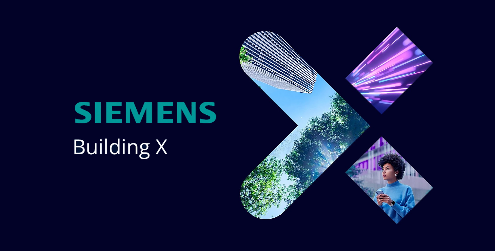
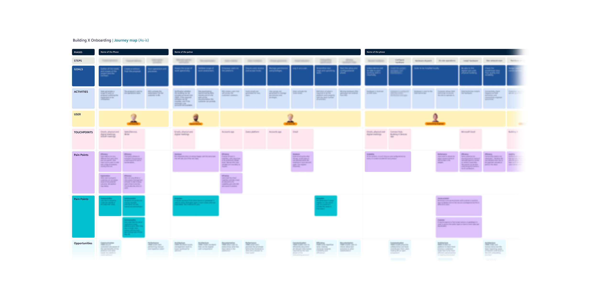
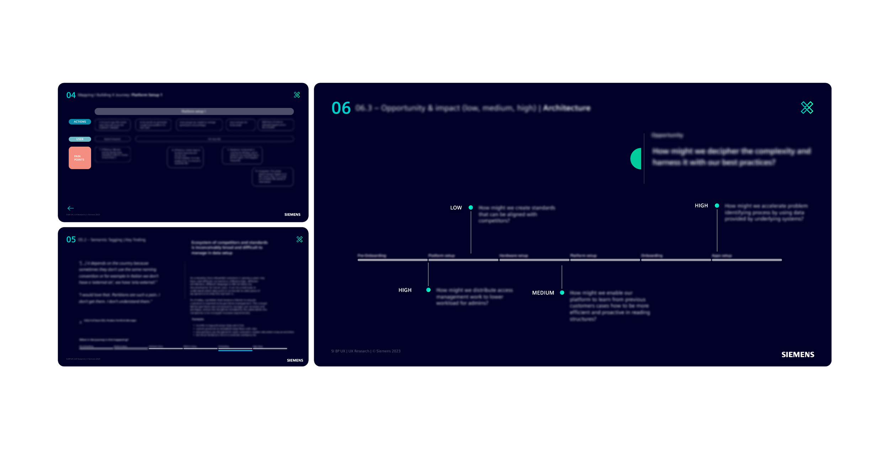

03 Siemens Smart Infrastructure · UX Research
Building X.
The first end-to-end mapping of the building & campus onboarding journey for a Siemens multi-product smart-building platform. La prima mappatura end-to-end del journey di onboarding di edifici e campus per una piattaforma smart-building multi-prodotto di Siemens.

Siemens Building X01 ContextContesto
Building X is a Siemens multi-product platform for managing smart grids and smart buildings, mainly targeting B2B customers. It is presented in the product portfolio as a cloud-based alternative solution. Building X è una piattaforma multi-prodotto di Siemens per la gestione di smart grid e smart building, rivolta principalmente a clienti B2B. È presentata nel portfolio come soluzione alternativa basata su cloud.
02 RoleRuolo
I served as Senior UX Researcher.Ho ricoperto il ruolo di Senior UX Researcher.
03 ChallengesSfide
No previous end-to-end mapping of the onboarding flow for a building or campus had been done. I contacted and interviewed over 40 users across 3 continents (USA, Africa, Europe), aligning stakeholders from diverse business divisions — sales, procurement, installation, technical leaders, developers and engineers. Non esisteva alcuna mappatura end-to-end del flusso di onboarding di un edificio o di un campus. Ho contattato e intervistato oltre 40 utenti su 3 continenti (USA, Africa, Europa), allineando stakeholder di divisioni diverse — vendite, procurement, installazione, technical leader, sviluppatori e ingegneri.
The process of rationalizing and mapping onboarding flows lasted between 6 months and 3 years depending on complexity, through 5 complementary personas and 25 interviews. Il processo di razionalizzazione e mappatura dei flussi di onboarding è durato da 6 mesi a 3 anni a seconda della complessità, attraverso 5 personas complementari e 25 interviste.
04 ActivitiesAttività
I proposed and executed the following activities:Ho proposto ed eseguito le seguenti attività:
- Research planning and stakeholder alignment.Pianificazione della ricerca e allineamento degli stakeholder.
- Kickoff meetings and creation of research plans.Meeting di kickoff e creazione dei piani di ricerca.
- Both field and desktop studies.Studi sul campo e desk research.
- Service blueprint mapping.Mappatura del service blueprint.
- Qualitative and quantitative analysis.Analisi qualitativa e quantitativa.
- Insight synthesis and suggesting new initiatives.Sintesi degli insight e proposta di nuove iniziative.

Onboarding journey map05 ImpactImpatto
For the first time, all actors involved in the onboarding process could see how their roles fit into the overall flow. Pain points were grouped into 5 main clusters, each containing 6–12 issues. The 13 design questions that emerged enabled teams to solve prioritized problems efficiently, with actions agreed upon with stakeholders from the reference business departments. Per la prima volta, tutti gli attori coinvolti nell'onboarding hanno potuto vedere come i loro ruoli si inseriscono nel flusso complessivo. I pain point sono stati raggruppati in 5 cluster principali, ciascuno con 6–12 problemi. Le 13 design question emerse hanno permesso ai team di risolvere in modo efficiente i problemi prioritari, con azioni concordate con gli stakeholder dei dipartimenti di riferimento.

UX-research slides06 Key learningsLezioni chiave
- It's a mistake to take for granted that you understand what your interviewee is reporting — better to double-check, especially with engineers with 25+ years of experience.È un errore dare per scontato di aver capito ciò che racconta l'intervistato — meglio verificare due volte, soprattutto con ingegneri con oltre 25 anni di esperienza.
- Aligning stakeholders during the process often reveals surprises that would otherwise go unnoticed, sometimes putting the audience into a defensive mode.Allineare gli stakeholder durante il processo spesso fa emergere sorprese che altrimenti passerebbero inosservate, a volte mettendo l'interlocutore sulla difensiva.
- A thorough research process requires time to design and implement, but ultimately saves more time.Un processo di ricerca accurato richiede tempo per essere progettato e svolto, ma alla fine ne fa risparmiare di più.